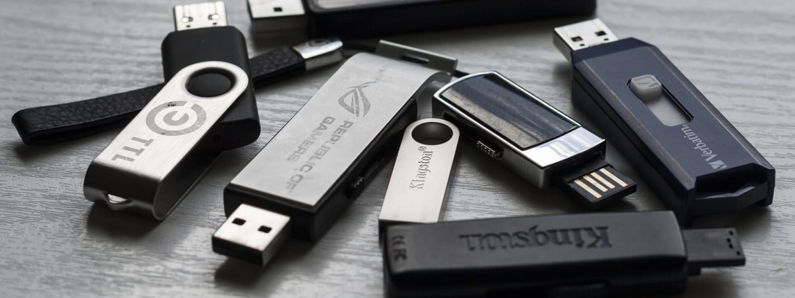

REMOVABLE MEDIA
What is Removable Media?
Removable Media is any type of storage devices connected to a computer, that can be removed at any time while the computer is still operating.
Removable Media include:
- External Hard Drive
- CDs
- DVDs
- USB sticks
- Tables
- Mobile Phones
The risks of using Removable Media
To begin with, Removable media includes many risks, as they store huge quantities of sensitive information. Removable media are capable of importing malicious content, exposing different types of data to risks.
Loss of Information
Large volumes of sensitive information is equipped to be lost, due to the fact that removable media is very easily lost. Removable media, such as USBs, can be easily stolen, hence, critical and senitive infomration could fall into the wrong hands, leading to the leakage of such informations.
To begin with, malware is a type of software assembled to cause a disturbance to a computer system, server or a computer network. According to various studies, it is found that malware delivered through removable media, nearly doubled in 2020.
Attackers intends to use removable devices, such as hard disks and USBs, to store a malware, which will then be connected to a computer, leading to the spread of a malware. A cybercrime group can send USB thumb drives to a group of people, intended as an advertisement for a company that does not exist, in the hope that recipients will plug them into their PCs and will instal a random malware on their networks, allowing attackers a full access to their networks.